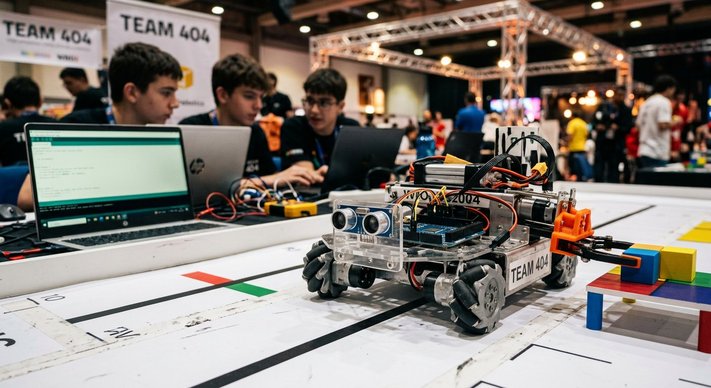

Qué cubre esta guía
- Panorama de competencias de robótica escolar
- Cómo elegir la competencia correcta
- Formación del equipo y roles
- Plan de entrenamiento por semanas
- El proceso de diseño de ingeniería
- Estrategia de misiones: consistencia antes que velocidad
- Programación de navegación y giros
- La bitácora de ingeniería
- Preparación mental y logística del día del evento
- Preguntas frecuentes
Panorama de competencias de robótica escolar
Existen varias competencias consolidadas con circuitos regionales en Latinoamérica. Conocer sus diferencias permite elegir la que mejor calza con tu equipo:
| Competencia | Edades | Plataforma típica | Enfoque principal |
|---|---|---|---|
| FIRST LEGO League (FLL) | 4–16 años (por divisiones) | LEGO SPIKE | Juego del robot + proyecto de innovación + valores del equipo |
| VEX Robotics Competition | 8–18 años (IQ / V5) | VEX IQ / V5 | Juego de alianzas y alta exigencia mecánica |
| World Robot Olympiad (WRO) | 8–19 años (por categorías) | LEGO u otras | Misiones de resolución técnica con reglas claras |
| RoboCup Junior | hasta 19 años | Variada | Fútbol, rescate y danza de robots autónomos |
En Chile existen instancias locales y clasificatorias de varias de estas competencias; consulta los calendarios oficiales de cada organización para conocer fechas y sedes de la temporada vigente.
Cómo elegir la competencia correcta
- Edad y nivel: cada competencia tiene divisiones por edad; elige la que permita al equipo competir en su rango natural, sin forzar categorías.
- Presupuesto: VEX V5 y los kits de competencia tienen un costo inicial alto; FLL con SPIKE y las categorías de WRO con LEGO son más accesibles, y hay categorías con plataformas libres de bajo costo.
- Enfoque que quieres premiar: FLL evalúa el proceso completo (robot, proyecto y valores); VEX y WRO se centran más en el desempeño técnico del robot. Decide qué experiencia quieres para el equipo.
- Logística: verifica fechas, sede, inscripción y requisitos de traslado antes de comprometer al equipo.
Formación del equipo y roles
Un equipo de 4 a 6 integrantes con roles claros y rotativos funciona mejor que uno grande y desorganizado. Los roles típicos son:
- Constructor/a: diseña y arma la estructura del robot, y es responsable de su robustez.
- Programador/a: escribe y depura el código de navegación y misiones.
- Estratega: estudia el reglamento y prioriza las misiones según su relación puntos/esfuerzo.
- Documentador/a: mantiene la bitácora de ingeniería al día.
- Presentador/a: prepara y ensaya la exposición oral y defiende el proyecto ante los jueces.
Plan de entrenamiento por semanas
| Semanas | Fase | Actividades clave |
|---|---|---|
| 1–2 | Análisis y estrategia | Leer el reglamento a fondo, listar misiones, priorizar por puntos/esfuerzo, definir roles |
| 3–5 | Construcción | Construir la base motriz, probar tracción y giros, elegir diseño de chasis |
| 5–7 | Programación | Implementar navegación (seguimiento de línea, giros), programar misiones una por una |
| 8–9 | Pruebas intensivas | Simulacros con cronómetro, medición de tasa de éxito por misión, ajustes de consistencia |
| 10 | Pulido final | Cerrar bitácora, ensayar presentación, preparar repuestos y logística |
El proceso de diseño de ingeniería
Los equipos ganadores no construyen una sola vez: iteran siguiendo el proceso de diseño de ingeniería, que es además lo que las competencias evalúan en la bitácora. El ciclo es:
- Identificar el problema: qué misión o desafío específico se quiere resolver.
- Investigar: cómo lo han resuelto otros equipos, qué mecanismos existen.
- Diseñar: proponer una o más soluciones, con bocetos.
- Construir: armar el prototipo.
- Probar: medir el desempeño con condiciones controladas.
- Mejorar: ajustar el diseño o el código a partir de los datos, y repetir el ciclo.
Registrar cada vuelta de este ciclo en la bitácora convierte el entrenamiento en evidencia de proceso, que es justamente lo que los jueces quieren ver.
Estrategia de misiones: consistencia antes que velocidad
En la mayoría de los formatos, los puntos se acumulan por misión completada y el tiempo es limitado. Esto define una regla de oro: la consistencia gana a la velocidad. Un robot confiable que completa menos misiones pero nunca falla suele superar a uno veloz que pierde la pista a mitad de ronda.
- Prioriza por puntos/esfuerzo: elige primero las misiones que más puntos dan por el menor tiempo y riesgo.
- Diseña trayectorias cortas y repetibles: menos giros y menos re-alineamientos reducen la acumulación de error.
- Mide la tasa de éxito: registra cuántas veces de cada 10 intentos se completa cada misión; si una misión falla más del 20%, rediseñala antes que acelerar.
- Deja la velocidad para el final: sube la velocidad solo cuando la consistencia ya esté asegurada.
Programación de navegación y giros
La navegación confiable es la base técnica de casi todas las competencias. Dos herramientas marcan la diferencia: el seguimiento de línea para alinear el robot a la pista y el giro con giroscopio para girar ángulos precisos. Un giro por tiempo o por conteo de rotaciones acumula error con cada repetición; el giroscopio permite girar hasta un ángulo objetivo con corrección activa.
// Giro con giroscopio hacia un angulo objetivo (pseudocodigo Arduino)
const int MOTOR_IZQ = 5;
const int MOTOR_DER = 6;
void girarHasta(float anguloObjetivo) {
float anguloActual = leerGiroscopio(); // angulo acumulado del sensor
while (abs(anguloObjetivo - anguloActual) > 2.0) { // tolerancia de 2 grados
float error = anguloObjetivo - anguloActual;
// Correccion proporcional: girar mas rapido mientras mayor sea el error
int velocidad = constrain((int)(error * 3.0), -255, 255);
analogWrite(MOTOR_IZQ, -velocidad);
analogWrite(MOTOR_DER, velocidad);
anguloActual = leerGiroscopio();
}
// Frena ambos motores al llegar al angulo
analogWrite(MOTOR_IZQ, 0);
analogWrite(MOTOR_DER, 0);
}El mismo principio de control proporcional se aplica al seguimiento de línea (la corrección es proporcional al error entre sensores) y se explica con más detalle en la guía de proyectos para feria científica. Para equipos que parten desde cero con la placa, la base está en Primeros Pasos con Arduino Uno.
La bitácora de ingeniería
La bitácora es el documento que demuestra el proceso de trabajo y, en competencias como FLL, se evalúa directamente. Una buena bitácora registra con fechas:
- Decisiones y su justificación: por qué se eligió un chasis, una rueda o un sensor y no otro.
- Bocetos y fotos: de cada iteración del diseño, incluyendo las versiones descartadas.
- Datos de pruebas: tablas de tasa de éxito, tiempos y mediciones de cada misión.
- Problemas y soluciones: qué falló, cómo se diagnosticó y cómo se corrigió.
- Reflexiones del equipo: qué aprendió cada integrante y cómo mejoró la colaboración.
Preparación mental y logística del día del evento
El día de la competencia es un entorno nuevo: otra mesa, otra iluminación, público y cronómetro. Todo eso se entrena con anticipación:
- Simulacros realistas: practica con cronómetro, público simulado y condiciones ligeramente distintas (luz, mesa) para acostumbrar al equipo a la variabilidad.
- Plan de imprevistos: define de antemano quién hace qué si se descarga una batería, si un sensor se descalibra o si una ronda sale mal.
- Kit de repuestos: baterías cargadas, cables, sensores y piezas críticas duplicadas, más las herramientas básicas.
- Mentalidad de proceso: refuerza que el valor está en el aprendizaje; los equipos que mantienen la calma tras una mala ronda se recuperan mejor en las siguientes.
Conclusión
Preparar un equipo para competencias de robótica escolar es un proyecto de ingeniería en sí mismo: elegir bien la competencia, organizar roles, entrenar con un plan, iterar con el proceso de diseño, priorizar la consistencia sobre la velocidad y documentar todo en la bitácora. El resultado no se mide solo en trofeos: el trabajo en equipo, la perseverancia y la capacidad de comunicar ideas técnicas que desarrollan los estudiantes valen mucho más allá de la pista. Si quieres empezar por los fundamentos de aula, revisa la Guía para Docentes: Cómo Llevar la Robótica al Aula y el catálogo de kits para colegios.
Preguntas frecuentes
¿Cuál es la mejor competencia de robótica para empezar?
Para un equipo que recién comienza, FIRST LEGO League (FLL) suele ser la mejor puerta de entrada: está diseñada para edades escolares, valora tanto el proyecto de innovación y los valores del equipo como el desempeño del robot, y su formato de desafío anual es muy accesible con kits LEGO SPIKE. La World Robot Olympiad (WRO) también tiene categorías por edades con reglas claras y menor exigencia de infraestructura. La elección depende de la edad del equipo, el presupuesto y si se prefiere un formato que premie el proceso completo (FLL) o uno más centrado en la resolución técnica de misiones (WRO).
¿Qué roles debo asignar dentro del equipo?
Un equipo competitivo funciona mejor con roles claros y rotativos: constructor/a (diseña y arma la estructura del robot), programador/a (escribe y depura el código de navegación y misiones), estratega (analiza el reglamento y prioriza qué misiones puntúan más por el esfuerzo requerido), documentador/a (mantiene la bitácora de ingeniería) y presentador/a (prepara la exposición oral y defiende el proyecto ante los jueces). La rotación de roles entre temporadas o entre fases del proyecto evita la especialización excesiva y fortalece al equipo completo, un aspecto que las competencias como FLL evalúan explícitamente.
¿Cuántas semanas antes debo empezar a preparar al equipo?
Lo ideal es empezar entre 8 y 12 semanas antes de la competencia, distribuyendo el tiempo en fases: dos semanas de lectura del reglamento y diseño de estrategia, cuatro a seis semanas de construcción y programación iterativa del robot y sus misiones, una o dos semanas de pruebas intensivas y simulacros con cronómetro, y una semana final de pulido de la presentación, la bitácora y la logística. Empezar antes permite la iteración que distingue a los equipos competitivos: el tiempo para fallar, corregir y volver a probar es el recurso más valioso del entrenamiento.
¿Qué es más importante: que el robot sea rápido o que sea consistente?
La consistencia gana a la velocidad. En la mayoría de las competencias, un robot que completa las misiones de forma confiable en cada ronda obtiene más puntos totales que uno rápido que falla a menudo, porque los puntos de las misiones completadas se acumulan y una misión fallida no solo no suma, sino que suele consumir tiempo valioso. La estrategia ganadora prioriza misiones de alta puntuación con alta tasa de éxito, diseña trayectorias cortas y repetibles, y reserva la velocidad como ajuste final solo cuando la consistencia ya está asegurada.
¿Cómo preparo a los estudiantes para la presión del día de la competencia?
La presión del día de la competencia se entrena: organiza simulacros con cronómetro, público simulado y condiciones cambiantes (luz distinta, mesa ligeramente distinta) para que el equipo se acostumbre a rendir bajo estrés. Ensaya además los imprevistos: batería descargada, sensor que se descalibra o una ronda que sale mal, definiendo de antemano quién hace qué en cada caso. Refuerza la idea de que el valor está en el proceso y en el aprendizaje, y que una mala ronda no define al equipo; los equipos que mantienen la calma y se comunican bien suelen recuperarse y puntuar mejor en las rondas siguientes.
Este artículo es contenido editorial independiente: no contiene ubicaciones patrocinadas ni enlaces de afiliado. Si en futuras actualizaciones se agregan enlaces a proveedores de kits o inscripciones, serán identificados explícitamente. Los nombres de competencias y marcas pertenecen a sus respectivas organizaciones; verifica reglamentos y calendarios oficiales vigentes antes de inscribir a tu equipo. Si detectas un error en esta guía, por favor avísanos.
Sigue aprendiendo
Refuerza los fundamentos técnicos de tu equipo con Primeros Pasos con Arduino Uno y el Radar con Sensor Ultrasónico, y arma tu catálogo de ideas con los 12 Proyectos para la Feria Científica.
Fuentes primarias y lecturas recomendadas
Sitios oficiales de las competencias mencionadas; consulta reglamentos y calendarios vigentes antes de inscribirte.
- FIRST LEGO League — Sitio oficial
- VEX Robotics Competition — Sitio oficial
- World Robot Olympiad — Asociación oficial
- RoboCup Junior — Sitio oficial
Enlaces revisados: 13 de agosto de 2026.